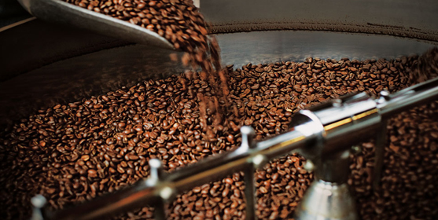

COMPARTIR ESTA ÉPOCA CONTIGO ES MÁGICO
Todos nuestros productos hechos con amor para ti!
Todos nuestros productos hechos con amor para ti!
Nuestras cafeterías se han convertido en puntos de referencia para los amantes del café en todo el mundo. ¿Pero por qué insisten en venir a Starbucks? Porque saben que reciben un servicio genuino, un ambiente acogedor y una magnífica taza de café tostado preparado con esmero por manos expertas.
Para crear el espresso perfecto, nuestros baristas necesitan los mejores utensilios y máquinas. Nuestras cafeteras espresso diseñadas a la medida son el medio más importante con el que contamos. Con una precisión infalible, muelen el café y descargan el agua respetando los tiempos precisos para extraer el máximo sabor. Esto permite a tu barista concentrarse en crear tu bebida tal y como te gusta. También utilizamos jarras de leche innovadoras, que hemos también hemos diseñado expresamente para ofrecerte el mejor espresso. Estas jarras ayudan a nuestros baristas a conseguir la leche vaporizada, dulce y cremosa, con la espuma aterciopelada y compacta que ofrece el mejor sabor.
El mejor espresso comienza siempre con los mejores granos de café arábica tostados a la perfección siguiendo nuestras indicaciones. Desde que desarrollamos nuestro Espresso Roast, hace más de 30 años, hemos continuado perfeccionando tanto el tostado, como la mezcla. De esta forma, nos aseguramos de que el tostado más intenso proporcione un sabor profundo, dulce y acaramelado, con baja acidez. Para conservar ese sabor, molemos el café justo antes de cada descarga. Además, nuestros granos de espresso se adquieren siempre de acuerdo con principios de abastecimiento ético y respetando al 100 por ciento el Comercio Justo. Por este motivo, no solo saben bien, sino que sientan bien. Sin embargo, los granos de espresso no son más que el principio. Para servir una buena taza de espresso se necesita leche de calidad. Es imprescindible habilidad y tiempo para vaporizar la leche hasta convertirla en una espuma aterciopelada con burbujas minúsculas. Esta microespuma es la que dará al espresso un matiz más dulce y cremoso. Como comentábamos, la habilidad del barista también es indispensable. Su reto consiste en combinar la leche vaporizada con el espresso en menos de 10 segundos. Transcurrido ese tiempo, la rica capa espumosa que se vierte sobre el espresso recién servido comienza a quebrarse y su sabor cambia. Por este motivo, el barista debe medir el tiempo a la perfección, para que tu taza resulte siempre perfecta.
